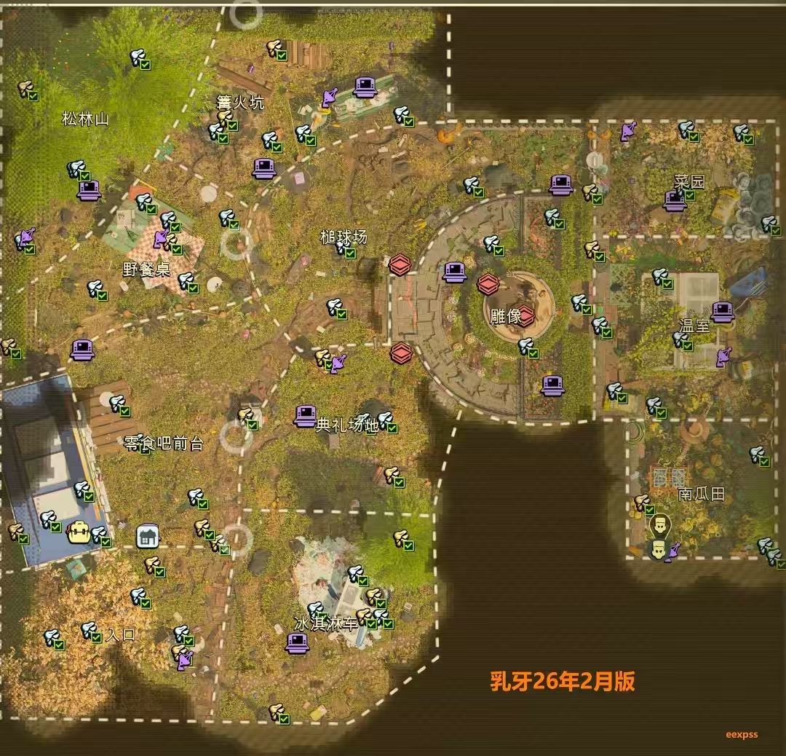

Search a landmark
Use the map search box for places such as the picnic table, anthills, cups, signs and tunnels.
Map Page
Find the official in-game map reference, then open a real browser map for Grounded 2 regions, resources, locations and route planning.
Use this supplied map image to recognize the major landmarks before opening the live browser map. The Chinese labels are kept so they match the reference image and the locations players may see in their game.

Use the real Brookhollow Park browser map after you recognize the area in the reference image. It is a separate tool, so it opens in a new tab instead of loading a broken embed.
Live browser map
Open the full map in its own tab to use the terrain, search box, category filters, and map markers.
Use the map search box for places such as the picnic table, anthills, cups, signs and tunnels.
Open the category list and narrow the markers to key items, collectibles, resources or landmarks.
Return to the Milk Molar guide for plain-language clues after you identify the area on the map.